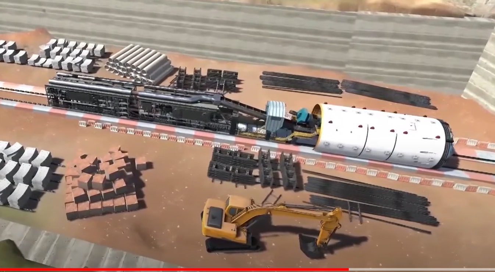

What do you
think is the best way to learn about windmills? Is it by only reading about it
in a textbook or by actually visiting it?
Experiential
learning has a special value in engineering education. When students perform
any experiment or visit a particular site, they tend to deeply comprehend the
concept. For example, they will have a better idea of the working principle of
the windmill and yaw mechanism when they visit it rather than just listening to
the wind turbine.
Technology like virtual reality gives an
outstanding way to immerse in such industrial sites, virtually. In this blog,
you will read about how visiting such sites virtually can be effective.
What is the Significance of Field Trips in Engineering Education?
A field trip is an integral part of engineering education. But what do these field trips bring to engineering education?
●
Field trips give a real-time industry experience to students.
●
Students clearly understand what the industry demands from field
engineers.
●
Field trips can change students’ perspectives from looking at
engineering education in a theoretical way to a practical way.
●
It helps students to get deeper industry insights and prepare for
the future in advance.
●
Students may get hands-on experience with some field trips.
●
Students get exposure to networks and work on team building
via field trips.
●
Field trips clear complex concepts.
●
It may develop critical thinking and let students be aware of the
latest industry trends.
But is it possible to avail of such an experience virtually? Let us discuss field trips using virtual reality technology.

What is a Virtual Field Trip?
A virtual field trip (VFT) allows engineering students to have an educational experience digitally. Students can visit various sites, plants, machinery, and their workings, etc. via VFT. In addition, this experience is feasible without leaving the classroom or home. It offers a 360-degree view of a field or industry via virtual reality simulations. Virtual field trips offer a cost-effective and accessible way to provide students with immersive learning experiences.
What are the Benefits of Using Virtual Field Trips for Education?
Virtual field trips provide several benefits in engineering education, including:
Increased accessibility
As an
educator, you may struggle to take permission from various authorities to visit
a plant or an industry. It involves a lot of time and effort. Virtual field
trips avoid these struggles by increasing accessibility. These trips allow
students to visit locations and learn about real-world engineering applications
from anywhere. It makes engineering education more accessible to a wider range
of students.
Cost savings
Taking a
whole class or a batch for a visit requires time and cost. From arranging
traveling to accommodation, there are various expenses involved. Virtual field
trips eliminate the need for physical travel and associated expenses, making it
an affordable option for schools and students.
Enhanced interactive experiences
Virtual
reality is immersive and interactive technology. Users can get completely
involved in the virtual environment and interact with a simulated VR world.
Virtual field trips provide students with engaging and immersive learning
experiences to witness ins and outs of subjects or concepts.
Increased safety
Imagine that
you are arranging a plant visit for electrical engineering students to a
nuclear power plant. There are many risks when you take students to such plants
as they are not aware of dos and don’ts. It can lead to greater risk while
visiting such a radiation-based environment unlike using VR in electrical
engineering. Virtual
field trips completely eliminate the risks associated with physical field
trips, such as transportation and safety hazards, providing a safer learning environment
for students.
Efficient use of resources
Virtual field trips allow for the efficient use of resources. These resources can be time, money, and personnel, as they can be organized and delivered from a central location.

Use Cases of Virtual Field Trips in Engineering Education
Many universities and even companies offer VR-based field experience for engineering students. The following are use cases of virtual field trips in engineering education:
Faculty of Engineering and Information Sciences,
University of Wollongong, Wollongong, Australia found it very difficult during
covid periods to arrange a field trip when the world was shut. They developed a
replica of an electrical substation using virtual reality.
It offered an excellent learning experience and strong cognitive learning
benefits.
Another
example is an offering from Boeing. It offers a unique advantage for STEM
students with the VR solution called Future U. It is a platform for both educators
and learners where they get virtual field trips of the Boeing manufacturing
process. Learners can explore the latest engineering technologies and tools
used in manufacturing with these virtual field trips.
How is iXRLabs using VR for Virtual Field Trips?
iXRLabs used
virtual reality technology to allow students to experience virtual field visits
for various engineering branches such as mechanical, electrical, and civil.
Students can
explore the solar power plant and learn about the power generation process
using solar energy. VR technology allows you to show the working of the solar
power plant in different weather conditions such as rainfall, shading, etc. In
a traditional visit to a solar plant, you may need to arrange a few separate
trips to let students learn about these weather conditions. However, with
iXRLabs’ virtual field trips, students can learn about it all at once.
Chemical or petroleum engineering students can visit oil refineries using iXRLabs’ virtual field trips. VR-driven oil refinery shows the exact working of refining crude oil takes place. It shows degumming, and neutralization virtually. Learners can experience every step from crude heating to steam generation in an immersive mode to elevate their understanding and get the necessary industry knowledge.
Conclusion
Virtual field trips can make a significant impact on the learning and growth of students, offering precise industry insights. It encourages them to set goals and act accordingly. As an educator, you can stand out when you offer such state-of-the-art technology for industrial visits. Do you want to know more about virtual reality field tours? Let us connect!